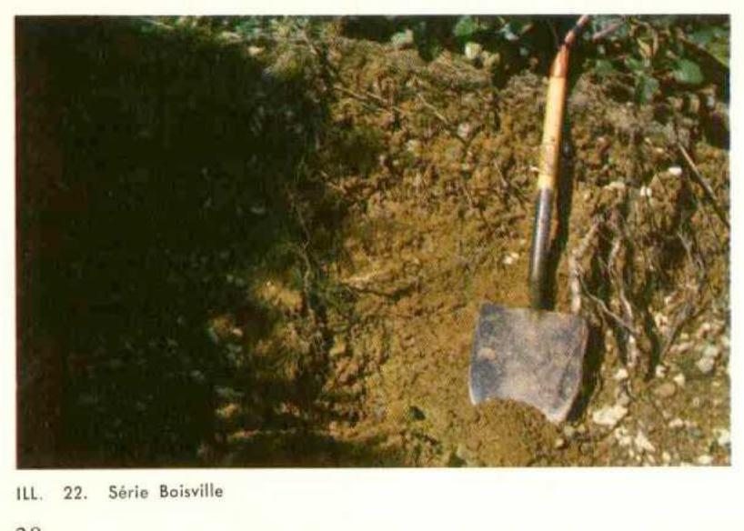

Identification & Caractéristiques Générales
La série Boisville s'est développée sur des dépôts éoliens ou des sédiments sableux marins remaniés, mis en place dans le contexte géomorphologique insulaire des Îles-de-la-Madeleine. Le matériau parental est constitué de sables quartzeux meubles, pauvres en minéraux altérables et caractérisés par une faible réserve minérale inhérente. La topographie associée à cette série se compose généralement de surfaces ondulées à dunaires, où les pentes varient de faibles à modérées, influençant directement le cheminement des eaux de percolation superficielle.
Le profil morphologique de la série Boisville présente une différenciation texturale marquée par des sables grossiers à fins sur l'ensemble du solum. Le drainage naturel est excessif à rapide en raison de la forte perméabilité verticale du matériau sableux et de sa faible capacité de rétention en eau. Le profil montre un lessivage prononcé des bases échangeables, entraînant une réaction fortement acide (pH faible) dans les horizons supérieurs. La structure est généralement particulièrement lâche, single-grained, ce qui confère au sol une faible cohésion structurale naturelle et une absence totale d'horizon de compaction inhérent, bien qu'un horizon spodique ou des indices de podzolisation puissent être observés sous couvert forestier.
Sur le plan agronomique, les sols de la série Boisville présentent des limitations sévères pour la production agricole intensive, principalement attribuables à leur texture grossière, à leur sécheresse estivale prononcée consécutive à une faible réserve utile en eau, ainsi qu'à leur fertilité naturelle très réduite. Ces sols nécessitent des apports réguliers et fractionnés d'amendements calcaires pour corriger l'acidité, ainsi qu'une fertilisation minérale et organique soutenue pour supporter les cultures. L'irrigation est souvent requise pour contrer les déficits hydriques fréquents en période de croissance, tandis que le maintien d'un couvert végétal ou de résidus de surface est indispensable afin de prévenir les risques d'érosion éolienne accrus par le travail mécanique.
Classification Taxonomique & Environnement Pédologique
| Ordre Pédologique | Brunisolique |
|---|---|
| Grand Groupe (SCSS) | Brunisol dystrique |
| Sous-Groupe Taxonomique | Brunisol dystrique éluvié |
| Famille Pédologique | Loameuse-grossière, mixte sableux, acide |
| Mode de Dépôt Parental | Morainique |
| Classe de Drainage Naturel | Bien drainé |
| Régime Thermique & Humidité | Frais / Subhumide |
Description Morphologique du Profil Type
Séquences génétiques des horizons pédologiques caractérisant le profil type représentatif de la série Boisville :
Profil forestier / boisé — Pédologie des Îles-de-la-Madelei
✓ Source : Pédologie des Îles-de-la-Madelei — Page 38Couleur Munsell : 2.5YR 5/2
Structure & Consistance : Polyédrique à granulaire
Description morphologique : Loam brun rouge foncé (2.5YR 5/2); grumeleux; friable; extrêmement acide.
Couleur Munsell : Non précisée
Structure & Consistance : Polyédrique à granulaire
Description morphologique : Inclus dans l'horizon supérieur. Non discernable par suite du travail des animalicules.
Couleur Munsell : 5YR 5/6
Structure & Consistance : Polyédrique à granulaire
Description morphologique : Loam caillouteux rouge jaune (5YR 5/6); légèrement grumeleux; friable; perméable; très fortement acide.
Couleur Munsell : 5YR 4/6
Structure & Consistance : Polyédrique à granulaire
Description morphologique : Loam caillouteux rouge jaune (5YR 4/6); particulaire à légèrement grumeleux; fortement à très fortement acide.
Couleur Munsell : 5YR 4/4
Structure & Consistance : Polyédrique à granulaire
Description morphologique : Loam à cailloux anguleux brun rouge (5YR 4/4); particulaire; compact; moyennement acide.
Profil naturel (vierge) — Pédologie des Îles-de-la-Madelei
✓ Source : Pédologie des Îles-de-la-Madelei — Page 40Couleur Munsell : 5YR 3/1
Structure & Consistance : Feuilletée à spongieuse dans sa partie inférieure
Description morphologique : Matière organique mésotrophe; structure feuilletée à spongieuse dans sa partie inférieure; gris très foncé (5YR 3/1); très fortement acide.
Couleur Munsell : 5YR 6/2
Structure & Consistance : Polyédrique à granulaire
Description morphologique : Sable limoneux particulaire; meuble; gris rose (5YR 6/2); très fortement acide.
Couleur Munsell : 2.5YR 4/8, 10R 5/4
Structure & Consistance : En agrégats fins
Description morphologique : Loam à loam argileux; structure en agrégats fins; friable; perméable; rouge (2.5YR 4/8), rouge faible à sec (10R 5/4); fortement acide.
Couleur Munsell : 10R 3/6, 10R 5/3
Structure & Consistance : Polyédrique à granulaire
Description morphologique : Argile massive légèrement collante si humide, cimentée à l'état sec; rouge foncé (10R 3/6) et rouge pâle à sec (10R 5/3); faiblement acide en profondeur sur matériau calcaire.
Profils Photographiques & Planches de Terrain
Documents iconographiques, figures pédologiques et coupes de terrain documentées dans les mémoires d'inventaire pour de la série Boisville :

Propriétés Physico-Chimiques & Analyses de Laboratoire
Données Analytiques de Laboratoire
Aucune analyse physico-chimique quantitative de laboratoire (granulométrie par sédimentométrie, pH H₂O/CaCl₂, matière organique Walkley-Black ou bases échangeables) n'a été consignée pour cette unité dans les archives historiques numérisées ou les bases contemporaines EESSAQ/MAPAQ.
Particularités Régionales, Phases & Variantes Pédologiques
Déclinaisons régionales, faciès texturaux, phases d'érosion ou de pierrosité et variantes cartographiées par étude pour de la série Boisville :
| Étude Régionale | Symbole | Appellation / Phase / Variante | Différenciation avec la série type (Analyse pédologique) |
|---|---|---|---|
| Pédologie des Ïles-de-la-Madeleine | Bf |
Boisville loam à loam caillouteux | Modalité modale de référence (type de base de la série). |
| Pédologie des Îles-de-la-Madelei | BSV |
Série Boisville (Bf) | Conforme à la série type de référence (caractéristiques texturales et drainage identiques). |
Distribution Pédo-Paysagère & Représentativité Cartographique (Couverture PPS 2026)
- Les Demoiselles loam à loam sableux (LML) — co-occurrente dans 1 polygone(s)
- Madelinot loam caillouteux (MDI) — co-occurrente dans 1 polygone(s)
- Solomon loam à loam argileux (SLM) — co-occurrente dans 1 polygone(s)
Aptitudes Agronomiques, Hydropédologie & Conservation des Sols
Indicateurs Hydropédologiques & Vulnérabilité à l'Érosion (BDHP 2026)
Interprétation BDHP : Potentiel de ruissellement modérément faible. Infiltration modérée avec textures moyennes à modérément grossières.
Classement selon l'Inventaire des Terres du Canada (ITC / CLI) : Classe 1.
- Potentiel agricole : Terroir adapté aux cultures régionales selon la texture dominante et la régie de drainage.
- Contraintes majeures : Bien drainé. Risque d'engorgement temporaire ou d'excès d'eau printanier.
- Gestion & Aménagement : Drainage souterrain ou superficiel préconisé sur les terres planes. Chaulage et apport organique régulier selon les bilans agronomiques.
- Cultures adaptées : Grandes cultures (maïs, soya, céréales), prairies fourragères et cultures maraîchères selon le contexte géomorphologique.